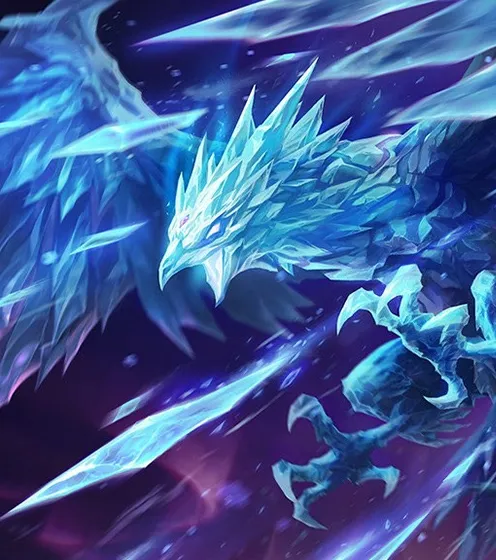
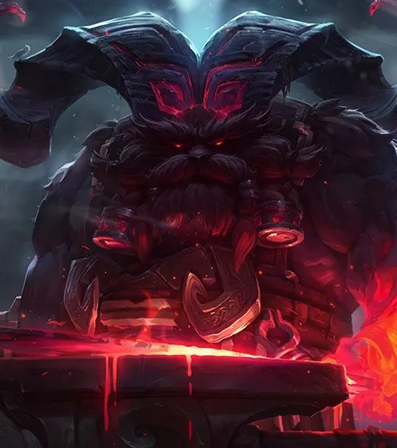
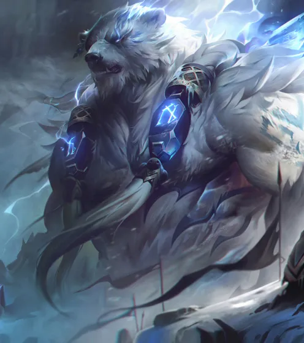

Gods of Freljord

Anivia is a benevolent winged spirit who endures endless cycles of life, death, and rebirth to protect the Freljord. A demigod born of unforgiving ice and bitter winds, she wields those elemental powers to thwart any who dare disturb her homeland. Anivia guides and protects the tribes of the harsh north, who revere her as a symbol of hope, and a portent of great change. She fights with every ounce of her being, knowing that through her sacrifice, her memory will endure, and she will be reborn into a new tomorrow

Ornn is the Freljordian spirit of forging and craftsmanship. He works in the solitude of a massive smithy, hammered out from the lava caverns beneath the volcano Hearth-Home. There he stokes bubbling cauldrons of molten rock to purify ores and fashion items of unsurpassed quality. When other deities—especially Volibear—walk the earth and meddle in mortal affairs, Ornn arises to put these impetuous beings back in their place, either with his trusty hammer or the fiery power of the mountains themselves

To those who still revere him, the Volibear is the storm made manifest. Destructive, wild, and stubbornly resolute, he existed before mortals walked the Freljord's tundra, and is fiercely protective of the lands that he and his demi-god kin created. Cultivating a deep hatred of civilization and the weakness it brought with it, he now fights to return to the old ways—when the land was untamed, and blood spilled freely—and eagerly battles all who oppose him, with tooth, claw, and thundering domination